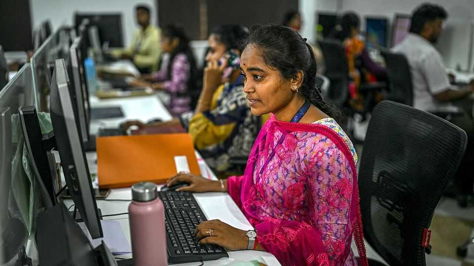
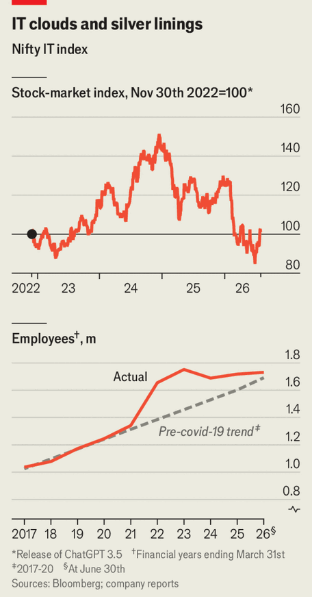

India’s IT sector is surviving artificial intelligence
Though the technology is making life still harder for many graduates

Aug 6th 2026
IF THE HYPE about artificial intelligence is to be believed, India’s tech industry should bear the brunt of any incoming wave of AI job losses. Before the breakthroughs that made chatbots functional, tech types quipped that AI stood for “actually Indians”, as seemingly whizzy tech was really the work of humans in Hyderabad or Bangalore. But now the sort of tasks outsourced to India—software development and routine business processes such as payroll—are among those AI is best placed to take over from people.
Yet evidence of job losses is not easy to come by. That is partly because data are patchy. Around 6m Indians work in information technology, according to Nasscom, the industry body. Almost anywhere else, that would be a vast number (roughly equal to the population of Denmark). But it is just a tiny slice, around 1%, of India’s workforce. It is also a group that statistics agencies find hard to sample, says Rosa Abraham, an economist at Azim Premji University. IT workers are rich by Indian standards and often live in gated communities to which survey-takers cannot get access. Zealous security guards turn away those without prior approval.

But it is also because AI is not making much of a dent. AI boosters can point to job cuts at India’s IT giants, including Tata Consultancy Services (TCS) and Infosys. For years employment at companies in the Nifty IT index, a group of listed big consultancies, grew by around 6% a year. Since the release of ChatGPT in late 2022 headcount has declined—from 1.71m in 2023 to 1.66m at the end of June, according to The Economist’s estimates. But that is not solely down to chatbots. Aggregate headcount is still 9% above the pre-pandemic trend (see chart), and the consultancies are pulling back after a hiring boom. The Indian operations of Capgemini, Cognizant and Accenture, three big foreign firms, display a similar pattern.
Hiring in another form of Indian white-collar work is still booming. The number employed in global capability centres (GCCs), captive back offices handling everything from research and IT to HR and finance, has risen from 1.4m in 2019 to 2.4m this year, Nasscom estimates. Anthropic (yes, the AI darling), Costco, an American retailer, and L’Oréal, a French cosmetics giant, are among the latest arrivals. Aggregate IT employment rose by half between 2018 and 2025; GCCs’ share of it went up from 35% to 40%.
AI is, however, speeding up two shifts that were already under way. The first is from outsourcing to insourcing. Pari Natarajan, a consultant, says companies divide tasks between “core” and “context”. Context functions, such as making accounts payable or providing tech support, can be hived off to outsourcers and are easiest to automate. Core functions, however, are the business-critical sort from which a firm gets its competitive edge. As tech becomes more central to companies, more functions shift from context to core.
GCCs have thrived as companies have come to see IT as fundamental rather than a mere supporting function. AI is adding to this. Mr Natarajan gives the example of a bank: when IT was handling payments, they could be outsourced; but if an AI is making lending decisions, it needs to be internal. AI coding tools are allowing companies to move more IT functions in-house: Starbucks, for instance, is developing its own version of the point-of-sale software it used to buy off-the-shelf. That work may fall to staff in its Indian GCC, due to open later this year.
The second reinforced trend is the plight of recent graduates. Many have marched alongside the Cockroach Janta Party, a movement which has been protesting in Delhi about the lack of opportunities for the young. “What AI changes is the mix of talent we need,” says Vinod Kumar, chief people officer at Amtech, an American software company with a GCC in Bangalore. There is less demand for those workers with basic skills to do repetitive work. Instead there is a focus on engineers who can work effectively with AI. Naukri, a job portal, reports that in the past year overall demand for IT workers is down by 3%, while that for people with AI or machine-learning skills has risen by 25%.
Even if India’s IT companies remain a source of opportunities for more experienced engineers, the underemployed young face intense competition for good jobs. The number of students in India has risen from 34m in the early 2010s to 45m in 2024. Entry-level salaries for computer-science graduates in IT consulting have been frozen at around 310,000 rupees ($3,200) a year for nearly 20 years.
Graduates have noticed, says Neeti Sharma of TeamLease, a recruitment company, and are upskilling. For those who do, the rewards are substantial: she reckons graduates from top Indian universities who secure a place on a specialised AI programme can earn twice as much as their peers studying generic computer science. AI has not eaten India’s software services yet. But it is eyeing it hungrily. ■